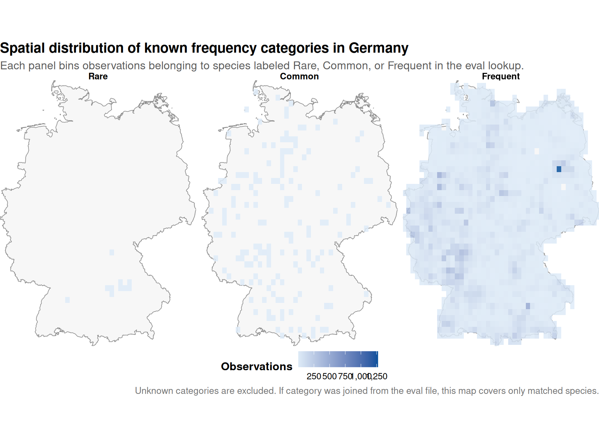
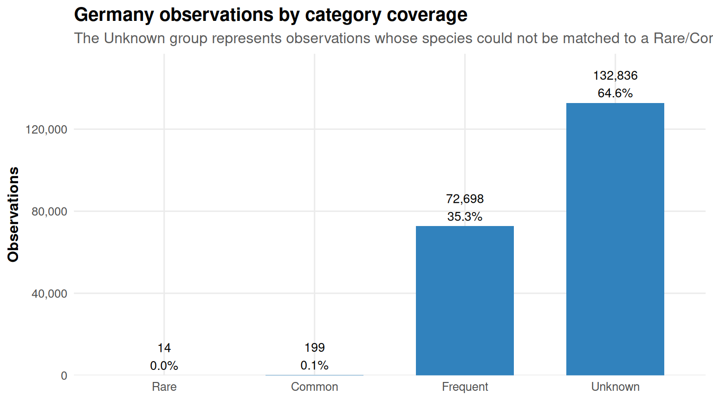
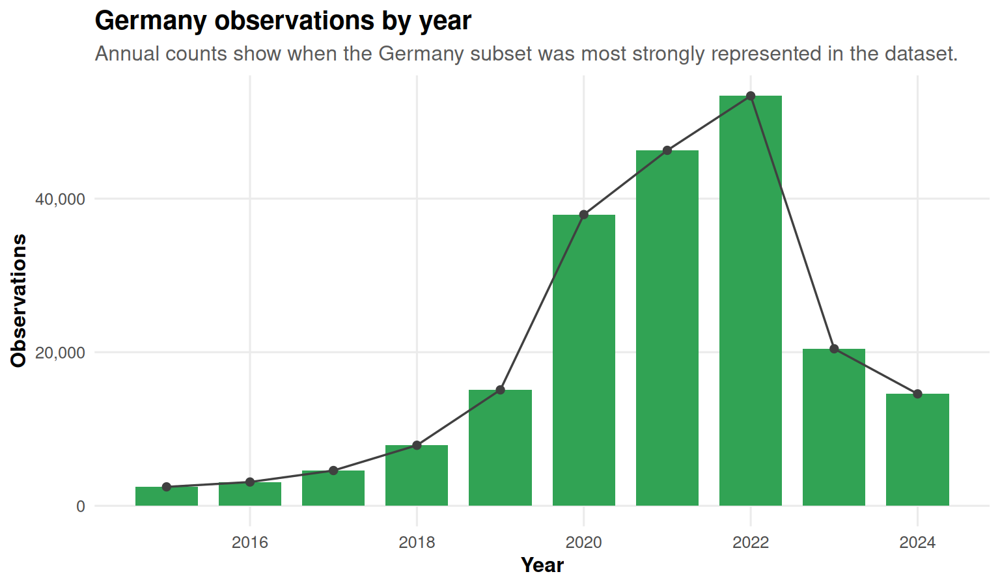
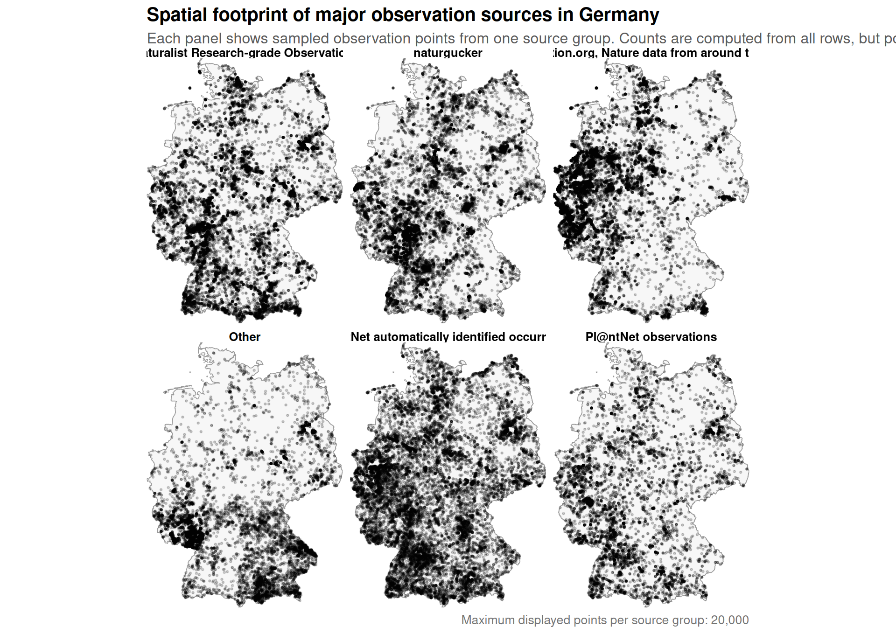
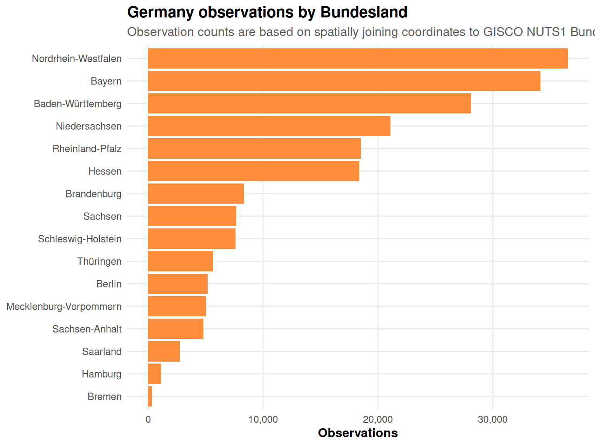
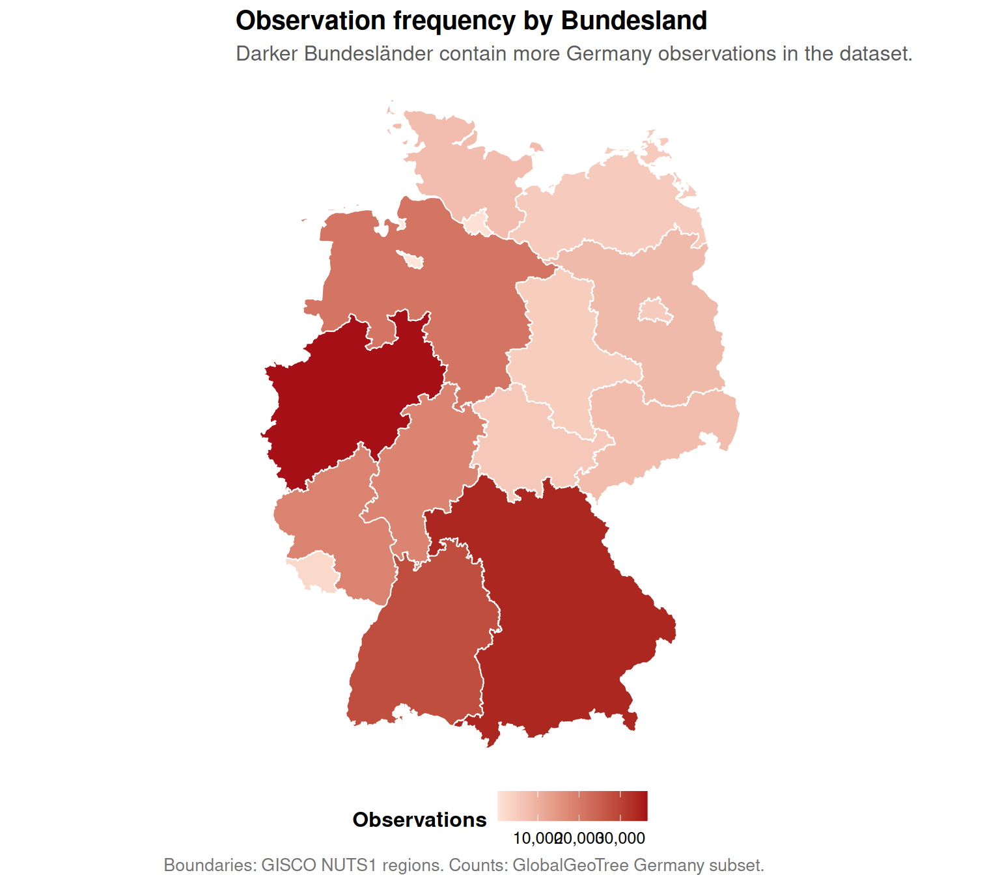
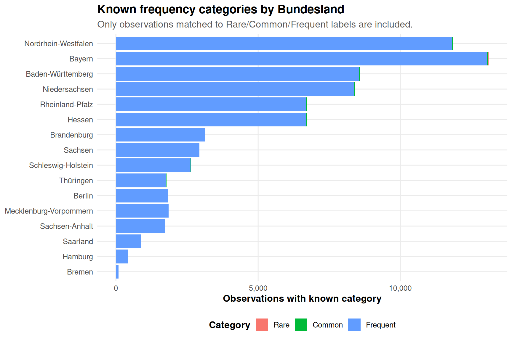
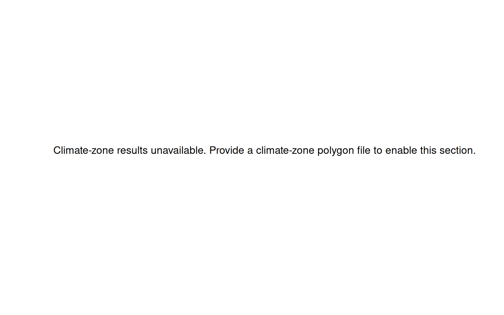
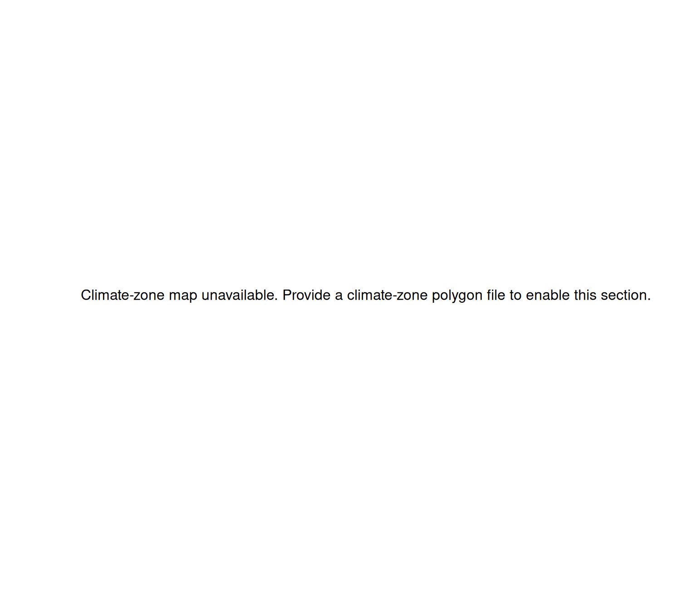

This report checks and visualizes Germany observations from the larger GlobalGeoTree dataset. It focuses on five questions:
How are dataset-defined tree frequency categories (Rare, Common, Frequent) distributed across the German map?
How many observations are recorded by year?
How are observations from different sources distributed across Germany?
How are observations mapped to German Bundesländer, and how do observation frequencies differ by Bundesland?
Can observations be mapped to external climate-zone polygons?
Important: the full GlobalGeoTree dataset may not contain the category variable. If it does not, this report joins Rare, Common, and Frequent from the larger eval dataset GlobalGeoTree-10kEval-900.csv. In that case, category-based visualizations only describe species that can be matched to that eval file.
Setup
# Required packages only.# data.table: fast CSV reading# dplyr/stringr: data cleaning and summaries# ggplot2/scales: visualizations# sf: spatial joins and mapsrequired_packages <-c("data.table", "dplyr", "stringr", "ggplot2", "scales", "sf")missing_packages <- required_packages[!vapply(required_packages, requireNamespace, logical(1), quietly =TRUE)]if (length(missing_packages) >0) {stop("Please install the following packages before rendering this report: ",paste(missing_packages, collapse =", ") )}library(data.table)library(dplyr)
Attache Paket: 'dplyr'
Die folgenden Objekte sind maskiert von 'package:data.table':
between, first, last
Die folgenden Objekte sind maskiert von 'package:stats':
filter, lag
Die folgenden Objekte sind maskiert von 'package:base':
intersect, setdiff, setequal, union
Linking to GEOS 3.12.1, GDAL 3.8.4, PROJ 9.4.0; sf_use_s2() is TRUE
set.seed(42)# -------------------------------------------------------------------------# User configuration# -------------------------------------------------------------------------# Main observations file. If the full file is present, it is used.# Otherwise, the 900-species eval file is used as fallback.observations_path <-if (file.exists("GlobalGeoTree.csv")) {"GlobalGeoTree.csv"} elseif (file.exists("GlobalGeoTree-10kEval-900.csv")) {"GlobalGeoTree-10kEval-900.csv"} else {"GlobalGeoTree-10kEval-90.csv"}# Preferred category lookup. This should contain the Category column.eval_lookup_path <-if (file.exists("GlobalGeoTree-10kEval-900.csv")) {"GlobalGeoTree-10kEval-900.csv"} elseif (file.exists("GlobalGeoTree-10kEval-90.csv")) {"GlobalGeoTree-10kEval-90.csv"} else {NA_character_}# Germany country code.focus_country_code <-"DE"# Maximum number of points displayed in point-based maps.# Counts and summaries still use all Germany rows.max_points_per_source_map <-20000max_points_per_category_map <-20000# Bundesländer boundaries.# The report will try to download/cache GISCO NUTS1 boundaries if this file is absent.bundeslaender_path <-"data/external/germany_nuts1_2021.geojson"# Optional climate-zone polygon file.# This must be an sf-readable file, for example GeoJSON or Shapefile.# The tree dataset itself does not contain climate zones.climate_zones_path <-"data/external/climate_zones_germany.geojson"# If your climate file uses a known column for the climate-zone label, put it here.# If NULL, the report tries to detect a reasonable label column.climate_zone_column <-NULL
clean_colnames <-function(x) { x <-tolower(gsub("[^A-Za-z0-9]+", "_", trimws(x))) x <-gsub("^_+|_+$", "", x)make.unique(x, sep ="_")}read_csv_clean <-function(path, cols =NULL) { raw_names <-names(data.table::fread(path, nrows =0, showProgress =FALSE)) clean_names <-clean_colnames(raw_names)if (is.null(cols)) { dt <- data.table::fread(path, showProgress =FALSE)names(dt) <- clean_namesreturn(as_tibble(dt)) } keep_clean <-intersect(cols, clean_names)if (length(keep_clean) ==0) {stop("None of the requested columns were found in ", path) } keep_indices <-match(keep_clean, clean_names) dt <- data.table::fread(path, select = raw_names[keep_indices], showProgress =FALSE)names(dt) <- clean_names[keep_indices]as_tibble(dt)}mode_value <-function(x) { x <- x[!is.na(x) & x !=""]if (length(x) ==0) return(NA_character_)names(which.max(table(x)))}clean_category <-function(x) { x <- stringr::str_squish(as.character(x)) x <- stringr::str_to_title(x) x[!(x %in%c("Rare", "Common", "Frequent"))] <-NA_character_ x}sample_up_to <-function(data, n_max) {if (nrow(data) <= n_max) { data } else { dplyr::slice_sample(data, n = n_max) }}theme_gtree <-function(base_size =12) {theme_minimal(base_size = base_size) +theme(plot.title =element_text(face ="bold", size = base_size +3),plot.subtitle =element_text(size = base_size, color ="gray35"),plot.caption =element_text(size = base_size -2, color ="gray45"),axis.title =element_text(face ="bold"),panel.grid.minor =element_blank(),legend.position ="bottom",legend.title =element_text(face ="bold"),strip.text =element_text(face ="bold") )}theme_map_gtree <-function(base_size =12) {theme_void(base_size = base_size) +theme(plot.title =element_text(face ="bold", size = base_size +3),plot.subtitle =element_text(size = base_size, color ="gray35"),plot.caption =element_text(size = base_size -2, color ="gray45"),legend.position ="bottom",legend.title =element_text(face ="bold"),strip.text =element_text(face ="bold"),panel.background =element_rect(fill ="white", color =NA) )}format_number <-function(x) scales::comma(x, accuracy =1)
Load Germany observations
# First read only the columns needed for this analysis.# Category is optional because the full dataset may not contain it.requested_cols <-c("sample_id", "country_code", "level0", "level1_family", "level2_genus","level3_species", "location", "source", "species_key", "year","longitude", "latitude", "category")obs <-read_csv_clean(observations_path, cols = requested_cols)required_cols <-c("country_code", "longitude", "latitude", "level3_species")missing_required <-setdiff(required_cols, names(obs))if (length(missing_required) >0) {stop("The observations file is missing required columns: ", paste(missing_required, collapse =", "))}obs <- obs |>mutate(country_code =str_to_upper(str_squish(as.character(country_code))),level3_species =str_squish(as.character(level3_species)),longitude =as.numeric(longitude),latitude =as.numeric(latitude),year =if ("year"%in%names(obs)) as.integer(year) elseNA_integer_,source =if ("source"%in%names(obs)) str_squish(as.character(source)) else"Unknown source",species_key =if ("species_key"%in%names(obs)) as.character(species_key) elseNA_character_ ) |>filter( country_code == focus_country_code,!is.na(longitude), !is.na(latitude),between(longitude, -180, 180),between(latitude, -90, 90),!is.na(level3_species), level3_species !="" )if (!("category"%in%names(obs))) { obs$category <-NA_character_} else { obs$category <-clean_category(obs$category)}germany_raw <- obs
First 10 Germany rows after filtering and basic cleaning.
sample_id
country_code
level3_species
species_key
category
source
year
longitude
latitude
607427
DE
Abutilon theophrasti
3152614
NA
Observation.org, Nature data from around the World
2022
14.25516
51.87012
607428
DE
Abutilon theophrasti
3152614
NA
Pl@ntNet observations
2022
13.87257
51.27231
607429
DE
Aesculus spec
3189801
NA
naturgucker
2023
13.95652
51.87367
607430
DE
Aesculus spec
3189801
NA
naturgucker
2022
14.04159
50.97557
607431
DE
Aesculus spec
3189801
NA
Observation.org, Nature data from around the World
2024
14.20415
51.97633
607432
DE
Aesculus spec
3189801
NA
Observation.org, Nature data from around the World
2021
13.44270
50.93014
607433
DE
Aesculus spec
3189801
NA
Pl@ntNet automatically identified occurrences
2022
13.82200
51.16400
607434
DE
Aesculus spec
3189801
NA
Pl@ntNet automatically identified occurrences
2022
14.68800
51.08700
607435
DE
Aesculus spec
3189801
NA
Pl@ntNet automatically identified occurrences
2022
14.66000
51.06800
607436
DE
Aesculus spec
3189801
NA
Pl@ntNet automatically identified occurrences
2022
14.07000
52.24700
Add frequency categories from the eval dataset
category_source_note <-"Category was read directly from the main observations file."if (any(is.na(germany_raw$category)) &&!is.na(eval_lookup_path) &&file.exists(eval_lookup_path)) { eval_lookup <-read_csv_clean( eval_lookup_path,cols =c("species_key", "level3_species", "category") )if (!("species_key"%in%names(eval_lookup))) eval_lookup$species_key <-NA_character_if (!("level3_species"%in%names(eval_lookup))) eval_lookup$level3_species <-NA_character_if (!("category"%in%names(eval_lookup))) eval_lookup$category <-NA_character_ eval_lookup <- eval_lookup |>mutate(species_key =as.character(species_key),level3_species =str_squish(as.character(level3_species)),category =clean_category(category) ) |>filter(!is.na(category))# Join by species_key first where possible.if ("species_key"%in%names(germany_raw) &&"species_key"%in%names(eval_lookup)) { lookup_by_key <- eval_lookup |>filter(!is.na(species_key), species_key !="") |>group_by(species_key) |>summarise(category_lookup =mode_value(category), .groups ="drop") germany_raw <- germany_raw |>left_join(lookup_by_key, by ="species_key") |>mutate(category =coalesce(category, category_lookup)) |>select(-category_lookup) }# For still-unmatched rows, join by species name. lookup_by_species <- eval_lookup |>filter(!is.na(level3_species), level3_species !="") |>group_by(level3_species) |>summarise(category_lookup =mode_value(category), .groups ="drop") germany_raw <- germany_raw |>left_join(lookup_by_species, by ="level3_species") |>mutate(category =coalesce(category, category_lookup)) |>select(-category_lookup) category_source_note <-paste0("Missing Rare/Common/Frequent values were filled from ", eval_lookup_path," by species_key first and species name second." )}germany <- germany_raw |>mutate(category =if_else(is.na(category), "Unknown", category),category =factor(category, levels =c("Rare", "Common", "Frequent", "Unknown")),source =if_else(is.na(source) | source =="", "Unknown source", source) )category_source_note
[1] "Missing Rare/Common/Frequent values were filled from GlobalGeoTree-10kEval-900.csv by species_key first and species name second."
overview_metrics <- tibble::tibble(metric =c("Germany observations","Germany recorded species","Germany observations with known category","Germany recorded species with known category","Germany observations with unknown category","Germany recorded species with unknown category" ),value =c(nrow(germany),n_distinct(germany$level3_species),sum(germany$category !="Unknown"),n_distinct(germany$level3_species[germany$category !="Unknown"]),sum(germany$category =="Unknown"),n_distinct(germany$level3_species[germany$category =="Unknown"]) ))knitr::kable( overview_metrics |>mutate(value =format_number(value)),caption ="Germany category coverage summary.")
Germany category coverage summary.
metric
value
Germany observations
205,747
Germany recorded species
464
Germany observations with known category
72,911
Germany recorded species with known category
121
Germany observations with unknown category
132,836
Germany recorded species with unknown category
343
Load Bundesländer boundaries
dir.create(dirname(bundeslaender_path), recursive =TRUE, showWarnings =FALSE)gisco_nuts1_url <-"https://gisco-services.ec.europa.eu/distribution/v2/nuts/geojson/NUTS_RG_01M_2021_4326_LEVL_1.geojson"if (!file.exists(bundeslaender_path)) {try( utils::download.file(gisco_nuts1_url, bundeslaender_path, mode ="wb", quiet =TRUE),silent =TRUE )}bundeslaender <-tryCatch( { path_to_read <-if (file.exists(bundeslaender_path)) bundeslaender_path else gisco_nuts1_url x <- sf::read_sf(path_to_read)names(x) <-clean_colnames(names(x)) x <- sf::st_transform(x, 4326) x <- sf::st_make_valid(x)if ("cntr_code"%in%names(x)) x <-filter(x, cntr_code =="DE")if ("levl_code"%in%names(x)) x <-filter(x, levl_code ==1) name_col <-intersect(c("name_latn", "nuts_name", "name", "nuts_id"), names(x))[1]if (is.na(name_col)) stop("Could not identify Bundesland name column.") x |>mutate(bundesland = .data[[name_col]]) |>select(bundesland, geometry) },error =function(e) NULL)has_bundeslaender <-!is.null(bundeslaender) &&nrow(bundeslaender) >0if (has_bundeslaender) { germany_boundary <- sf::st_union(bundeslaender) germany_bbox <- sf::st_bbox(bundeslaender)} else { germany_boundary <-NULL germany_bbox <-c(xmin =min(germany$longitude, na.rm =TRUE),xmax =max(germany$longitude, na.rm =TRUE),ymin =min(germany$latitude, na.rm =TRUE),ymax =max(germany$latitude, na.rm =TRUE) )}if (!has_bundeslaender) {cat("Bundesländer boundaries could not be loaded. Maps will render without Bundesländer borders. Check your internet connection or place a boundary file at `", bundeslaender_path, "`.", sep ="")}
1. Frequency categories across the German map
This map shows where observations of species with known Rare, Common, or Frequent category labels occur. Unknown category observations are omitted from this figure because they cannot be assigned to one of the three frequency categories.
germany_known_category <- germany |>filter(category %in%c("Rare", "Common", "Frequent")) |>droplevels()if (nrow(germany_known_category) ==0) {plot.new()text(0.5, 0.5, "No Germany observations have known Rare/Common/Frequent categories.")} else { p <-ggplot()if (has_bundeslaender) { p <- p +geom_sf(data = germany_boundary, fill ="gray97", color ="gray55", linewidth =0.3) } p +stat_bin_2d(data = germany_known_category,aes(x = longitude, y = latitude, fill =after_stat(count)),bins =45,alpha =0.85 ) +facet_wrap(~ category) +scale_fill_gradient(low ="#deebf7", high ="#08519c", labels =comma_format()) +coord_sf(xlim =c(germany_bbox["xmin"], germany_bbox["xmax"]),ylim =c(germany_bbox["ymin"], germany_bbox["ymax"]),expand =FALSE ) +labs(title ="Spatial distribution of known frequency categories in Germany",subtitle ="Each panel bins observations belonging to species labeled Rare, Common, or Frequent in the eval lookup.",fill ="Observations",caption ="Unknown categories are excluded. If category was joined from the eval file, this map covers only matched species." ) +theme_map_gtree()}

category_counts <- germany |>count(category, name ="observations") |>mutate(share = observations /sum(observations))ggplot(category_counts, aes(x = category, y = observations)) +geom_col(width =0.65, fill ="#3182bd") +geom_text(aes(label =paste0(format_number(observations), "\n", percent(share, accuracy =0.1))),vjust =-0.2, size =3.5) +scale_y_continuous(labels =comma_format(), expand =expansion(mult =c(0, 0.18))) +labs(title ="Germany observations by category coverage",subtitle ="The Unknown group represents observations whose species could not be matched to a Rare/Common/Frequent label.",x =NULL,y ="Observations" ) +theme_gtree() +theme(legend.position ="none")

2. Observations by year
year_counts <- germany |>filter(!is.na(year)) |>count(year, name ="observations") |>arrange(year)if (nrow(year_counts) ==0) {plot.new()text(0.5, 0.5, "No usable year column was found.")} else {ggplot(year_counts, aes(x = year, y = observations)) +geom_col(fill ="#31a354", width =0.75) +geom_line(linewidth =0.6, color ="gray25") +geom_point(size =1.8, color ="gray25") +scale_x_continuous(breaks =pretty_breaks()) +scale_y_continuous(labels =comma_format()) +labs(title ="Germany observations by year",subtitle ="Annual counts show when the Germany subset was most strongly represented in the dataset.",x ="Year",y ="Observations" ) +theme_gtree()}

3. Observations by source on the country map
This map shows the main data sources spatially. To keep the map readable, only the largest sources are shown separately; the rest are grouped into Other.
p <-ggplot()if (has_bundeslaender) { p <- p +geom_sf(data = germany_boundary, fill ="gray97", color ="gray60", linewidth =0.3)}p +geom_point(data = source_map_data,aes(x = longitude, y = latitude),alpha =0.18,size =0.45 ) +facet_wrap(~ source_group) +coord_sf(xlim =c(germany_bbox["xmin"], germany_bbox["xmax"]),ylim =c(germany_bbox["ymin"], germany_bbox["ymax"]),expand =FALSE ) +labs(title ="Spatial footprint of major observation sources in Germany",subtitle ="Each panel shows sampled observation points from one source group. Counts are computed from all rows, but points are sampled for readability.",caption =paste("Maximum displayed points per source group:", format_number(max_points_per_source_map)) ) +theme_map_gtree()

source_counts <- germany_sources |>count(source_group, name ="observations", sort =TRUE)ggplot(source_counts, aes(x =reorder(source_group, observations), y = observations)) +geom_col(fill ="#756bb1") +coord_flip() +scale_y_continuous(labels =comma_format()) +labs(title ="Germany observations by source group",subtitle ="The same source grouping is used in the source map above.",x =NULL,y ="Observations" ) +theme_gtree()
if (has_bundeslaender) { bundes_summary <- tibble::tibble(metric =c("Germany observations joined to a Bundesland","Germany observations not joined to a Bundesland","Bundesländer with at least one observation" ),value =c(sum(!is.na(germany_bundes$bundesland)), bundesland_unknown_count,nrow(bundesland_counts) ) ) knitr::kable( bundes_summary |>mutate(value =format_number(value)),caption ="Spatial join summary for Germany observations and Bundesländer." )} else {cat("Bundesländer boundaries were unavailable, so the spatial join could not be performed.")}
Spatial join summary for Germany observations and Bundesländer.
metric
value
Germany observations joined to a Bundesland
205,143
Germany observations not joined to a Bundesland
604
Bundesländer with at least one observation
16
Bundesländer bar chart
if (!has_bundeslaender ||nrow(bundesland_counts) ==0) {plot.new()text(0.5, 0.5, "Bundesländer counts are unavailable.")} else {ggplot(bundesland_counts, aes(x =reorder(bundesland, observations), y = observations)) +geom_col(fill ="#fd8d3c") +coord_flip() +scale_y_continuous(labels =comma_format()) +labs(title ="Germany observations by Bundesland",subtitle ="Observation counts are based on spatially joining coordinates to GISCO NUTS1 Bundesländer boundaries.",x =NULL,y ="Observations" ) +theme_gtree()}

Bundesländer map
if (!has_bundeslaender ||is.null(bundesland_map)) {plot.new()text(0.5, 0.5, "Bundesländer map is unavailable.")} else {ggplot(bundesland_map) +geom_sf(aes(fill = observations), color ="white", linewidth =0.35) +scale_fill_gradient(low ="#fee5d9", high ="#a50f15", labels =comma_format()) +labs(title ="Observation frequency by Bundesland",subtitle ="Darker Bundesländer contain more Germany observations in the dataset.",fill ="Observations",caption ="Boundaries: GISCO NUTS1 regions. Counts: GlobalGeoTree Germany subset." ) +theme_map_gtree()}

Known frequency categories by Bundesland
This stacked chart uses only observations with a known Rare, Common, or Frequent category.
if (!has_bundeslaender ||is.null(germany_bundes)) {plot.new()text(0.5, 0.5, "Bundesländer category chart is unavailable.")} else { bundesland_category_counts <- germany_bundes |>filter(!is.na(bundesland), category %in%c("Rare", "Common", "Frequent")) |>count(bundesland, category, name ="observations") |>left_join(bundesland_counts, by ="bundesland", suffix =c("_category", "_total")) |>mutate(bundesland =factor(bundesland, levels =rev(bundesland_counts$bundesland)))if (nrow(bundesland_category_counts) ==0) {plot.new()text(0.5, 0.5, "No known categories are available after Bundesland joining.") } else {ggplot(bundesland_category_counts, aes(x = bundesland, y = observations_category, fill = category)) +geom_col() +coord_flip() +scale_y_continuous(labels =comma_format()) +labs(title ="Known frequency categories by Bundesland",subtitle ="Only observations matched to Rare/Common/Frequent labels are included.",x =NULL,y ="Observations with known category",fill ="Category" ) +theme_gtree() }}

5. Observations mapped to climate zones
GlobalGeoTree does not contain climate-zone labels. To map observations to known climate zones, an external climate-zone polygon layer is required. Put a GeoJSON or Shapefile at the path configured in the setup chunk:
data/external/climate_zones_germany.geojson
The file should contain polygon geometries and one column identifying the climate zone, for example climate_zone, zone, class, koppen, or kg_class.
if (!has_climate_zones) {cat("**Climate-zone layer not found.** The climate-zone section is ready, but it needs an external polygon layer at `", climate_zones_path,"`. Without this external file, the report cannot honestly assign observations to known climate zones.\n",sep ="" )}
Climate-zone layer not found. The climate-zone section is ready, but it needs an external polygon layer at data/external/climate_zones_germany.geojson. Without this external file, the report cannot honestly assign observations to known climate zones.
Climate-zone distribution
if (!has_climate_zones ||nrow(climate_counts) ==0) {plot.new()text(0.5, 0.5, "Climate-zone results unavailable. Provide a climate-zone polygon file to enable this section.")} else {ggplot(climate_counts, aes(x =reorder(climate_zone, observations), y = observations)) +geom_col(fill ="#2b8cbe") +coord_flip() +scale_y_continuous(labels =comma_format()) +labs(title ="Germany observations by climate zone",subtitle ="Observations were spatially joined to the external climate-zone layer.",x =NULL,y ="Observations" ) +theme_gtree()}

Climate-zone map
if (!has_climate_zones) {plot.new()text(0.5, 0.5, "Climate-zone map unavailable. Provide a climate-zone polygon file to enable this section.")} else { climate_points <- germany |>sample_up_to(25000) p <-ggplot() +geom_sf(data = climate_zones, aes(fill = climate_zone), alpha =0.55, color ="white", linewidth =0.25)if (has_bundeslaender) { p <- p +geom_sf(data = germany_boundary, fill =NA, color ="gray25", linewidth =0.35) } p +geom_point(data = climate_points,aes(x = longitude, y = latitude),alpha =0.18,size =0.4 ) +coord_sf(xlim =c(germany_bbox["xmin"], germany_bbox["xmax"]),ylim =c(germany_bbox["ymin"], germany_bbox["ymax"]),expand =FALSE ) +labs(title ="Tree observations over climate zones",subtitle ="Climate zones come from an external polygon layer; points show sampled Germany observations.",fill ="Climate zone" ) +theme_map_gtree()}

Interpretation notes
The category-based visualizations must be interpreted with care. If the full dataset did not contain category, then Rare, Common, and Frequent were joined from the eval dataset. In that case, the category maps and category-by-Bundesland chart only describe the matched subset of species, not the full Germany species pool.
The Bundesländer analysis is more complete because it uses all Germany observations with valid coordinates, regardless of whether category is known.
The climate-zone analysis requires external climate-zone polygons. Without such a file, the report cannot assign observations to known climate zones from the GlobalGeoTree data alone.